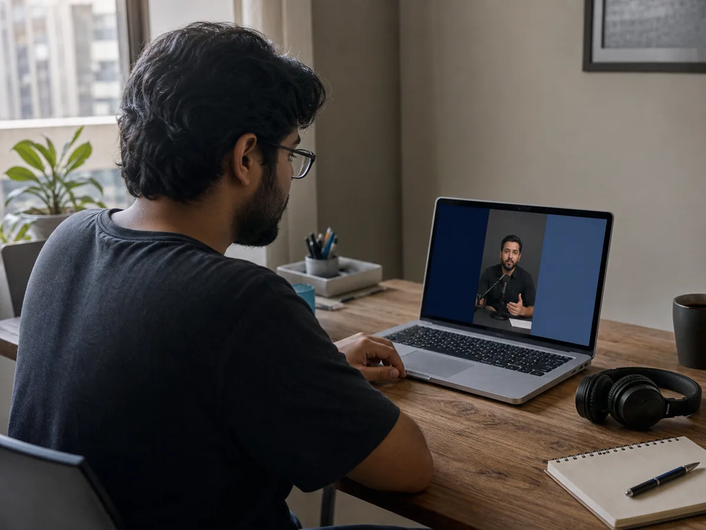
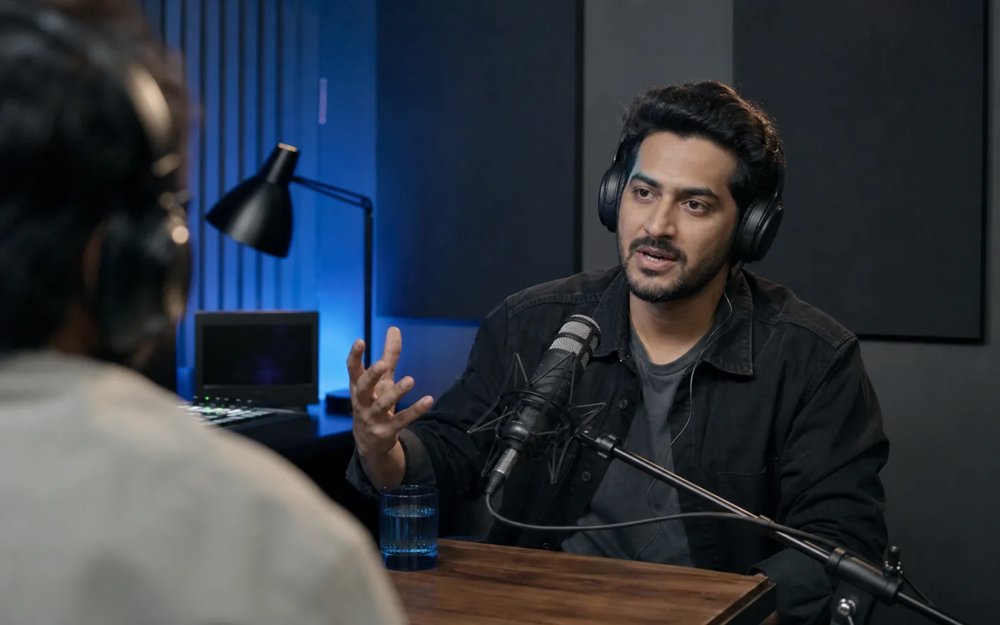
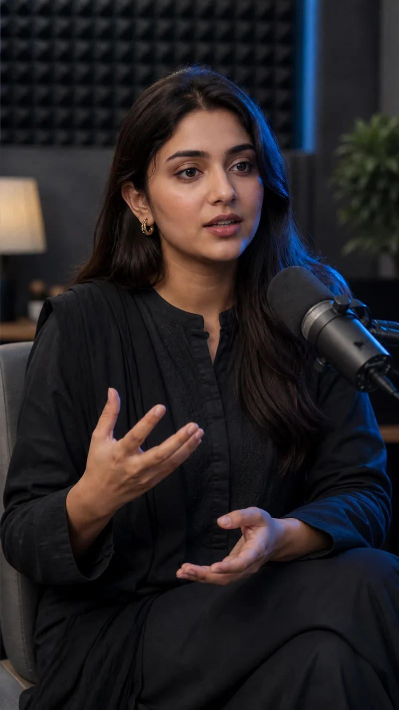

Find the moment worth clipping
Replay heatmaps and caption signals work together to surface the parts viewers care about.
Crux finds the strongest moments, fixes Hinglish captions, and delivers vertical clips ready to post.


Maine kaha ke audience ka trust build karo.
Hindi
Urdu
Hinglish
English
Code-switching
Most clippers hear words. Crux follows the idea, even when the sentence switches language halfway through.

Replay heatmaps and caption signals work together to surface the parts viewers care about.
The language gap
Fuzzy English recovery keeps code-switched words readable instead of turning them into subtitle noise.
Large single-line captions and a clean 9:16 composition arrive ready for Shorts, Reels, and TikTok.
Every clip can open with the source and close with the creator, channel, and full-video prompt.
Switch the preview to see how Crux keeps spoken language readable without forcing every word into one script.
Generic output
मैंने कहा के audience का trust build करो
Mixed scripts interrupt the read.
Crux output
Maine kaha ke audience ka trust build karo.
One clean line, ready for the screen.
Send the source once. Crux handles the repetitive work and keeps the final review in your hands.
Share the YouTube link or source video.
The strongest moments rise to the top.
Approve the moments and caption style.
Receive clean vertical files, ready to publish.
Every Crux engagement includes clip selection, vertical editing, captions, and source credit.
Direct contact
Tell Crux what you publish and where the clips should go. The next step starts in your inbox.
Podcasts, interviews, lessons, and long-form commentary with clear speech give Crux the strongest material to work with.
No. The service is designed to deliver finished vertical clips. You can still request changes before final delivery.
Yes. Code-switching is the point. Crux is built to recover spoken English inside Hindi, Urdu, and Hinglish captions.
Yes. Send one episode and receive a free sample clip before you commit.
No sales deck. Your own content is the demo.